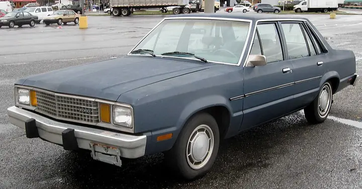
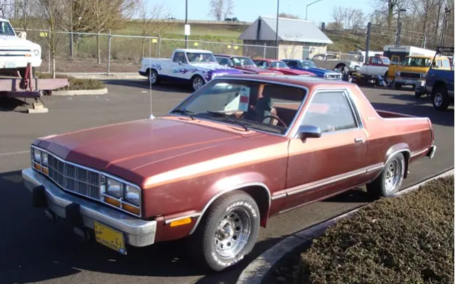
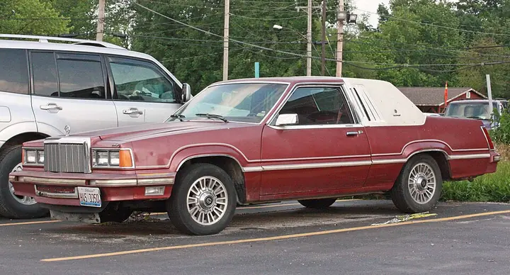
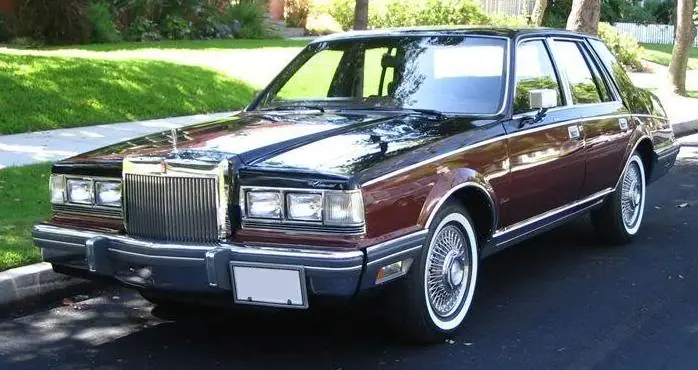
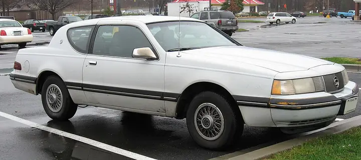
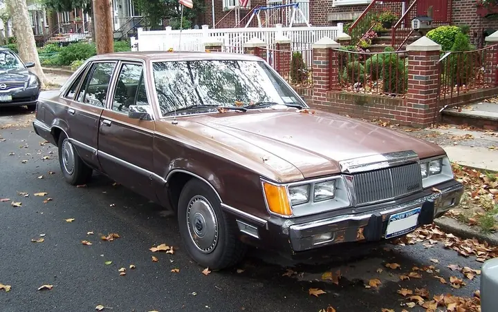

Platform
Ford Fox
14 generations of 12 models by Ford, Mercury and Lincoln, 1977–1993.
The cars

Ford Fairmont · Ford Fairmont (1977–1983) Ford Mustang · Third generation (1979)
Ford Mustang · Third generation (1979)
Ford Durango Ford Thunderbird · Eighth generation (1980–1982)
Ford Thunderbird · Eighth generation (1980–1982) Mercury Capri · Second generation (1979–1986)
Mercury Capri · Second generation (1979–1986)
Mercury Cougar · Fifth generation (1980–1982)- Ford Granada · Second generation (1981–1982)
 Ford LTD (Americas) · Fourth generation (1983–1986)
Ford LTD (Americas) · Fourth generation (1983–1986) Ford Thunderbird · Ninth generation (1983–1988)
Ford Thunderbird · Ninth generation (1983–1988)
Lincoln Continental · Seventh generation (1982–1987) Lincoln Continental Mark VII
Lincoln Continental Mark VII Lincoln Mark series · Sixth generation (Mark VII; 1984–1992)
Lincoln Mark series · Sixth generation (Mark VII; 1984–1992)
Mercury Cougar · Sixth generation (1983–1988)
Mercury Marquis · Fourth generation (1983–1986)